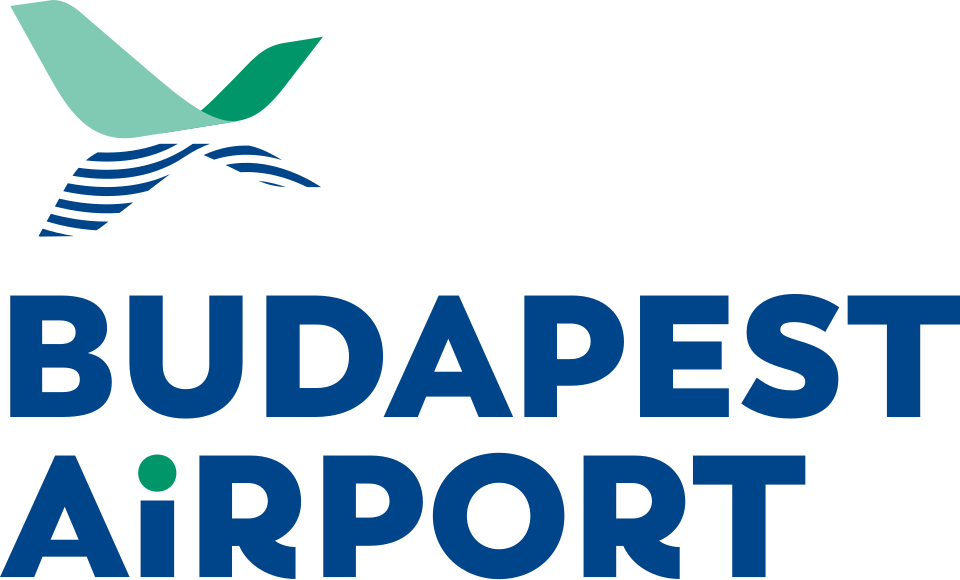

Thu · Aug 13
Land Budapest → Drive to Hévíz
DRIVE2:00to apartment
Land at BUD, collect car, stop at a Tesco/Spar for supplies, arrive Hévíz early evening. Easy first night — dinner from the apartment, early bed after the flight.
- Car rental pickup: Budapest Airport (BUD) Arrivals
- Buy motorway vignette at the fuel station or online
- Grocery stop: Aldi/Spar en route on the M7